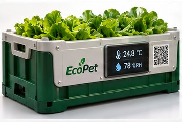

Fresh produce, watched from farm to truck.
EcoPet is a smart crate that records temperature and humidity for every batch of vegetables, and an app that turns the same data into a game students learn from.
Protect food. Learn smart. Play green.

Vegetables lose freshness a little at every stop.
Leafy greens wilt and spoil faster when they sit too warm or too dry. Between the farm, the cold room and the truck, nobody sees those conditions until the produce arrives damaged.
EcoPet puts a sensor in the crate itself, so each stop is on record and the people handling the food hear about a problem while there is still time to act.
Try the crate
This is a simulation of one crate, batch EP-0427. Pick a stage, then cause a problem and watch what the operator sees on the dashboard.
The crate checks its readings against the limit set for this stage.
EcoPet dashboard
Simulated data. Thresholds shown here are examples; in EcoPet they are set per stage. EcoPet monitors and alerts. A person takes the corrective action.
What's inside the crate
A reusable vegetable crate with a small sensing unit built into its side. The numbers on the photo match the parts below.
- 1
ESP32 and DHT22 sensor
Inside the housing, a DHT22 sensor measures temperature and humidity. An ESP32 microcontroller reads it and sends the data over Wi-Fi.
- 2
OLED display
Shows the current reading on the crate, so workers can check it without a phone.
- 3
QR batch label
Scanned at the farm to link the crate to its batch, so every reading is filed under the right produce.
- +
Central dashboard
Collects readings from every crate, compares them with each stage's limits and alerts operators when a limit is crossed.
One record from farm to truck
The same crate travels with the produce, so its readings follow the batch through each stage.
Farm collection
Workers fill the crate and scan its QR code. The batch is registered with its farm and harvest time.
Example: alert above 30 °CCold storage
The crate sits on a rack in the cold room while its readings keep arriving on the dashboard.
Example: alert above 5 °CTransport
The crate rides in a refrigerated truck. If the door is left open, the rising temperature is flagged.
Example: alert above 8 °CCentral dashboard
Every crate, every stage, one history per batch. When a reading crosses its limit, the operator gets an alert and can step in.
Because every reading carries the batch ID, a distributor can look up where a batch has been and what conditions it saw at each stop.
EcoPet Learn: a pet that grows when you learn
Students look after a pixel plant pet by completing food-security missions. Answer all four questions below to grow it from Seedling to Bloom.
What the prototype does today
EcoPet is an engineering prototype. This page separates what is built from what is simulated for this demo and what could come next.
| Built in the prototype | Simulated on this page | Possible next steps |
|---|---|---|
| Temperature and humidity sensing with a DHT22 sensor | The live readings in Try the crate | Pilot with a farm and a distributor |
| ESP32 data transmission to a central dashboard | The door-left-open and sun-exposure events | Many crates across many sites on one dashboard |
| OLED readout and QR batch ID on the crate | The sample reading in Live Learning | Linking alerts to cooling equipment, as a future integration |
| Threshold alerts on the dashboard | The scenarios in Simulation Learning | More missions built from real batch histories |
| EcoPet Learn app with pet, missions, quizzes and XP |
EcoPet helps people spot risky conditions early. It does not cool produce by itself, and it cannot guarantee food safety or prevent all losses.